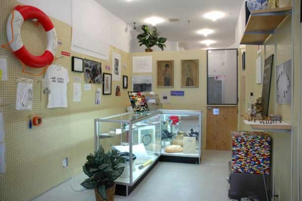

-
Edge Fund: Time/Bank at e-flux
by Jessica Loudis November 19, 2010
A universal search of e-flux’s Time/Bank project at 3:56 p.m. on Friday, November 12, turns up the following results, listed in descending chronological order:
For one hour of time, robgreene in Los Angeles “will provide 1 hour of DJing with either vinyl records, CDs, or both of all your favorite soulful, nostalgic jams!”
For 24 hours of time, Claudia in Germany asks readers to “send me your artwork, whether finished or in progress, and I will ask random passers-by and/or my grandma how they think you should proceed.”
And for two hours of time, mjg in New York offers to “draw you a picture and mail it to you (or exchange in person if you live in NYC). All I ask in turn is that you get a frame for it and hang it proudly on your wall.”
The currency is time, and the product is cultural work, or auxiliary services surrounding it. In exchange for translating a press release, babysitting a four-year-old or letting somebody crash on their couch—the definition of ‘work’ is subject to interpretation—participants in e-flux’s Time/Bank are awarded “Hour Notes” redeemable for goods on sale at the organization’s Essex Street storefront. (And not just there: a satellite location recently opened in Liverpool, and plans are afoot to launch more). To get involved, time bankers post ads detailing their skills or requesting somebody else’s, positioning themselves in a barter economy that’s occupationally delimited but functionally global.
e-flux dates the origins of time-banking back to British social reformer Robert Owen and American Josiah Warren, an anarchist who brought the system stateside in 1827 with the Cincinnati Time Store. Since then, time-banks have materialized in college towns and economically depressed communities across the country, realigning the relationship between functional value and work in an era of neoliberalism and abstract capital. The most high-profile American system currently operating is the Ithaca Hours, which Paul Glover established in 1991 and christened after its post-industrial hometown. London and Glasgow are also home to notable inner-city time banks, as is the student haven of Madison, Wisconsin, whose branch has over a thousand members. With its 21st century spin on utopian socialism and reliance on grassroots organization, it was only a matter of time before the system was adopted by artists.
While time banking itself falls within an older mold, e-flux’s iteration has a slightly different audience. By focusing exclusively on culture workers, Time/Bank highlights the precarity that unites the creative class with low-wage laborers in the brave new globalized economy. As Andrew Ross observes in Nice Work if You Can Get It, “flexploitataion” and the decline of Fordism have rendered white-collar workers structurally vulnerable, a position that’s mirrored in the migrant workforce. “Once they are in the game,” Ross writes of creative workers, “some of the players thrive, but most subsist, neither as employers nor traditional employees, in a limbo of uncertainty, juggling their options, massaging their contracts, managing their overcommitted time, and developing coping strategies for handling the uncertainty of never knowing where their next project, or source of income, is coming from.” Broke culture workers, in short, are the ideal participants in an economic system that feeds on precarity. Not a new conceit, but one that feels especially significant when surveying the cradle-to-art school wares at the Essex Street store. Time/Bank may enable creative workers to live comfortably as leftists, but it also implies that this is perhaps a less voluntary association than in the past.
A quick scan of the shelves offers dissertations’ worth of material for future cultural anthropologists. In addition to toothbrushes and a variety of dried foods, necessary goods include the following: texts on Hegel and anarcho-syndicalism (30 minutes); condoms (20 minutes); paintbrushes (15 minutes); yoga mat (one hour); guitar (14 hours); Casio watches (2 hours); hemp soap (one hour); Chia Lincoln (one hour); stovetop coffee maker (2 hours); and a blue Peugeot bike—originally fifteen hours, reduced to ten due to necessary repair work. These are the must-haves of a certain subset of the cultural stratosphere, revealing that the project’s real divide is social, not economic.
With this in mind, a prescient question that Time/Bank raises is what counts as work in the creative economy, and subsequently, what qualifies as luxury. An easy way of approaching this is through the division between material and immaterial labor: construction or dog walking read easily as physical work, but what about conceptualizing web projects or curating art shows? In the context of the project, it’s all the same, with quality and value determined by users and unmoored from physical output. Assuming the time costs are the same, fixing a guitar or building a shelf is worth exactly as much as German-English translation or theorizing about art. Ultimately, the question isn’t one of labor, but of value.
In 2007, e-flux planted the seeds for Time/Bank with PAWNSHOP, a project that explored the “poetics of circulation and distribution” by inviting 60 artists to contribute works that would be reclaimed or eventually pawned to the public. “A pawnshop,” the press release explains, “is a stage where merchandise and money dance in a choreography that could have them circle back and cancel each other out, but in fact rarely does.” Rather than floating back and forth over the hazy border between exchange value and use value, items at pawn shops typically sit unused on shelves, slowly going to rot while their monetary avatars are off having a good time. By sticking 60 indisputably valuable artworks in a pawnshop, e-flux forced a clash between contradictory models of value, momentarily transforming a holding cell for unwanted or useless but valuable goods into a kind of gallery space. With the distance between goods and capital ever increasing—or at least, goods and our ability to value them—Time/Bank picks up where Pawnshop leaves off, creating a nearly closed system that’s pegged entirely to use value.
As anthropologist David Graeber points out in his incisive article about art and immaterial labor—a concept he thrashes before leaving for dead—the value of art comes from its recognition by moneyed tastemakers. Artists produce things, Graeber writes, physical items that “financiers can baptize, consecrate, through money and thus turn into art.” Bankers don’t produce tangible items, but it’s their verdict that determines whether an artist shopping in the Time/Bank store is doing so out of luxury or necessity. But Graeber insists that this isn’t cause for anti-capitalist despair: money migrating from bankers to artists enters alternative spaces much the way that government welfare checks do. “It is never clear,” he writes of art sales, “who exactly is scamming whom.” This opaque system of valuation is the referent in Time/Bank, and it’s one that e-flux cleverly undermines by positing a workable alternative. Without necessarily suggesting a fundamental realignment, the project’s central insight is that people will work for what they care about, so long as they’re allowed to determine what matters to them.

2 Comments
Edge Fund: Time/Bank at e-flux « Black Octavo
[...] Fund: Time/Bank at e-flux Cross-posted at Idiom Lawrence Weiner, Time/Bank Currency, 2010. Photo: Julieta Aranda. Via Austin [...]
On Carlos Eire « Black Octavo
[...] Quick review for the Wall Street Journal: [...]